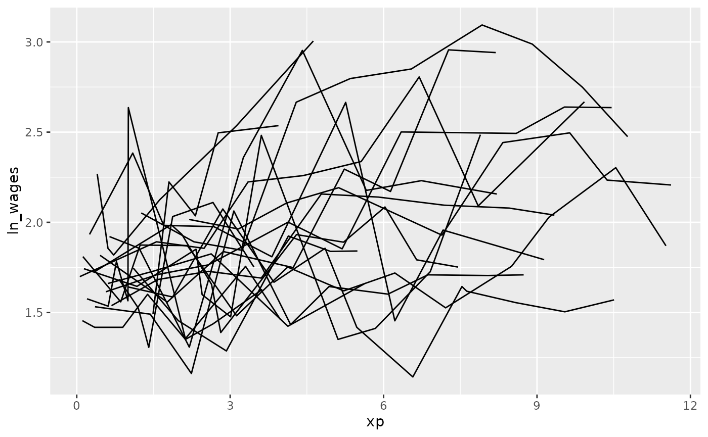
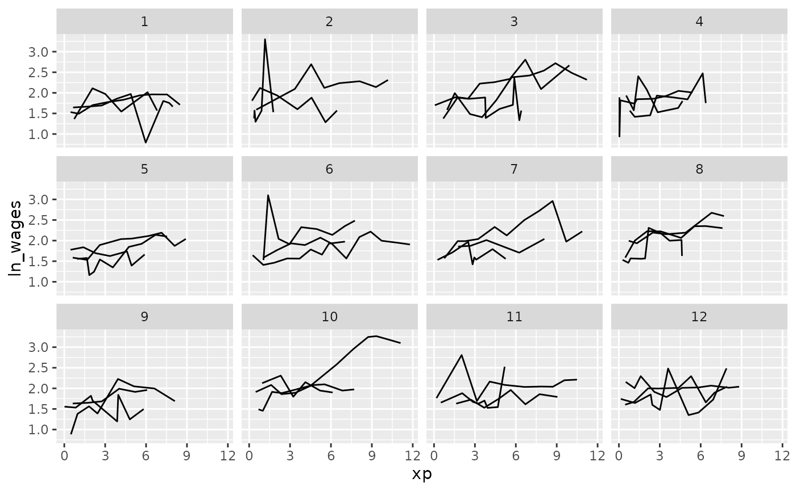

brolgar explores two ways to explore the data, first
exploring the raw data, then exploring the data using summaries. This
vignette displays a variety of ways to explore your data around these
two ideas.
Exploring raw data
When you first receive your data, you want to look at as much raw data as possible. This section discusses a few techniques to make it more palatable to explore your raw data without getting too much overplotting.
Select a sample of individuals
Sample n random individuals to explore (Note: Possibly not representative)
For example, we can sample 20 random individuals, and then plot them.
(perhaps change sample_n_keys into
sample_id.)
wages %>%
sample_n_keys(size = 20)
#> # A tsibble: 147 x 9 [!]
#> # Key: id [20]
#> id ln_wages xp ged xp_since_ged black hispanic high_grade unemploy_…¹
#> <int> <dbl> <dbl> <int> <dbl> <int> <int> <int> <dbl>
#> 1 6918 1.53 0.04 1 0.04 0 0 9 10.3
#> 2 6918 1.56 0.88 1 0.88 0 0 9 16.2
#> 3 6918 1.82 1.08 1 1.08 0 0 9 10.1
#> 4 6918 1.61 2.22 1 2.22 0 0 9 9.1
#> 5 6918 1.53 3.43 1 3.43 0 0 9 7.5
#> 6 6918 1.48 4.76 1 4.76 0 0 9 6.49
#> 7 6918 1.63 5.44 1 5.44 0 0 9 4.49
#> 8 6918 2.20 6.50 1 6.50 0 0 9 4.99
#> 9 2026 0.956 1.15 0 0 0 0 11 14.9
#> 10 2026 0.843 2.17 0 0 0 0 11 14.1
#> # … with 137 more rows, and abbreviated variable name ¹unemploy_rate
wages %>%
sample_n_keys(size = 20) %>%
ggplot(aes(x = xp,
y = ln_wages,
group = id)) +
geom_line()
Filter only those with certain number of observations
There was a variety of the number of observations in the data - some
with only a few, and some with many. We can filter by the number of the
observations in the data using add_n_obs(), which adds a
new column, n_obs, the number of observations for each
key.
wages %>%
add_n_obs()
#> # A tsibble: 6,402 x 10 [!]
#> # Key: id [888]
#> id xp n_obs ln_wages ged xp_since_ged black hispanic high_g…¹ unemp…²
#> <int> <dbl> <int> <dbl> <int> <dbl> <int> <int> <int> <dbl>
#> 1 31 0.015 8 1.49 1 0.015 0 1 8 3.21
#> 2 31 0.715 8 1.43 1 0.715 0 1 8 3.21
#> 3 31 1.73 8 1.47 1 1.73 0 1 8 3.21
#> 4 31 2.77 8 1.75 1 2.77 0 1 8 3.3
#> 5 31 3.93 8 1.93 1 3.93 0 1 8 2.89
#> 6 31 4.95 8 1.71 1 4.95 0 1 8 2.49
#> 7 31 5.96 8 2.09 1 5.96 0 1 8 2.6
#> 8 31 6.98 8 2.13 1 6.98 0 1 8 4.8
#> 9 36 0.315 10 1.98 1 0.315 0 0 9 4.89
#> 10 36 0.983 10 1.80 1 0.983 0 0 9 7.4
#> # … with 6,392 more rows, and abbreviated variable names ¹high_grade,
#> # ²unemploy_rateWe can then filter our data based on the number of observations, and
combine this with the previous steps to sample the data using
sample_n_keys().
library(dplyr)
wages %>%
add_n_obs() %>%
filter(n_obs >= 5) %>%
sample_n_keys(size = 20) %>%
ggplot(aes(x = xp,
y = ln_wages,
group = id)) +
geom_line()
Clever facets: facet_strata
brolgar provides some clever facets to help make it
easier to explore your data. facet_strata() splits the data
into 12 groups by default:
set.seed(2019-07-23-1936)
library(ggplot2)
ggplot(wages,
aes(x = xp,
y = ln_wages,
group = id)) +
geom_line() +
facet_strata()
You can control the number with n_strata:
set.seed(2019-07-23-1936)
library(ggplot2)
ggplot(wages,
aes(x = xp,
y = ln_wages,
group = id)) +
geom_line() +
facet_strata(n_strata = 6)
And have your regular control with other facet options:
set.seed(2019-07-23-1936)
library(ggplot2)
ggplot(wages,
aes(x = xp,
y = ln_wages,
group = id)) +
geom_line() +
facet_strata(n_strata = 6,
nrow = 3,
ncol = 2)
Clever facets: facet_sample
facet_sample() allows you to specify a number of samples
per plot with, “n per plot” and the number of facets to show with “n
facets”. By default it splits the data into 12 facets with 3 per
group:
set.seed(2019-07-23-1937)
ggplot(wages,
aes(x = xp,
y = ln_wages,
group = id)) +
geom_line() +
facet_sample()
This allows for you to look at a larger sample of the data.
Clever facets with number of observations
We can combine add_n_obs() and filter() to
show only series which have only 5 or more observations:
set.seed(2019-07-23-1937)
wages %>%
add_n_obs() %>%
filter(n_obs >= 5) %>%
ggplot(aes(x = xp,
y = ln_wages,
group = id)) +
geom_line() +
facet_sample()
These approaches allow you to view large sections of the raw data, but it does not point out individuals that are “interesting”, in the sense of those being outliers, or representative of the middle of the group.
Exploring data using features
You can plot the features of the data by first identifying features of interest and then joining them back to the data. For a more details explanation of this, see the vignette, “Finding Features”.
Plot monotonic individual series
In this example, we will plot those whose values only increase or
decrease with feat_monotonic and
gghighlight:
library(gghighlight)
wages %>%
features(ln_wages, feat_monotonic) %>%
left_join(wages, by = "id") %>%
ggplot(aes(x = xp,
y = ln_wages,
group = id)) +
geom_line() +
gghighlight(increase)
You can explore the available features, see the function References
Plot individuals with negative slope
We can find those individuals who have a negative slope using
key_slope. For more detail on key_slope, see
the Exploratory
Modelling vignette.
wages %>% key_slope(ln_wages ~ xp)
#> # A tibble: 888 × 3
#> id .intercept .slope_xp
#> <int> <dbl> <dbl>
#> 1 31 1.41 0.101
#> 2 36 2.04 0.0588
#> 3 53 2.29 -0.358
#> 4 122 1.93 0.0374
#> 5 134 2.03 0.0831
#> 6 145 1.59 0.0469
#> 7 155 1.66 0.0867
#> 8 173 1.61 0.100
#> 9 206 1.73 0.180
#> 10 207 1.62 0.0884
#> # … with 878 more rowskey_slope fits a linear model for each key, and returns
a tibble with the key columns and
.intercept and .slope_<varname>, and any
other explanatory variables.
We can use gghighlight to identify individuals with an
overall negative slope:
library(dplyr)
wages_slope <- wages %>%
key_slope(ln_wages ~ xp) %>%
left_join(wages, by = "id")
gg_wages_slope <- ggplot(wages_slope,
aes(x = xp,
y = ln_wages,
group = id)) +
geom_line()
gg_wages_slope +
gghighlight(.slope_xp < 0)
With a positive slope
gg_wages_slope +
gghighlight(.slope_xp > 0)
We could even facet by slope:
gg_wages_slope +
facet_wrap(~.slope_xp > 0)
Move along features with facet_strata
Visualise along slope
We can use the along argument of
facet_strata() to break the data according to some feature.
The only catch is that the data passed must be a
tsibble.
For example, we could break the data along the
.slope_xp variable into 12 groups, which by default will be
arranged in descending order. So here we have to groups broken up from
most positive slope to most negative.
wages_slope <- wages %>%
key_slope(ln_wages ~ xp) %>%
# ensures that we keep the data as a `tsibble`
left_join(x = wages, y = ., by = "id")
gg_wages_slope <- ggplot(wages_slope,
aes(x = xp,
y = ln_wages,
group = id)) +
geom_line()
gg_wages_slope +
facet_strata(n_strata = 12,
along = .slope_xp)
We could then do this along other features of a five number summary:
wages_five <- wages %>%
features(ln_wages, feat_five_num) %>%
# ensures that we keep the data as a `tsibble`
left_join(x = wages, y = ., by = "id")
wages_five
#> # A tsibble: 6,402 x 14 [!]
#> # Key: id [888]
#> id ln_wages xp ged xp_sin…¹ black hispa…² high_…³ unemp…⁴ min q25
#> <int> <dbl> <dbl> <int> <dbl> <int> <int> <int> <dbl> <dbl> <dbl>
#> 1 31 1.49 0.015 1 0.015 0 1 8 3.21 1.43 1.48
#> 2 31 1.43 0.715 1 0.715 0 1 8 3.21 1.43 1.48
#> 3 31 1.47 1.73 1 1.73 0 1 8 3.21 1.43 1.48
#> 4 31 1.75 2.77 1 2.77 0 1 8 3.3 1.43 1.48
#> 5 31 1.93 3.93 1 3.93 0 1 8 2.89 1.43 1.48
#> 6 31 1.71 4.95 1 4.95 0 1 8 2.49 1.43 1.48
#> 7 31 2.09 5.96 1 5.96 0 1 8 2.6 1.43 1.48
#> 8 31 2.13 6.98 1 6.98 0 1 8 4.8 1.43 1.48
#> 9 36 1.98 0.315 1 0.315 0 0 9 4.89 1.80 1.97
#> 10 36 1.80 0.983 1 0.983 0 0 9 7.4 1.80 1.97
#> # … with 6,392 more rows, 3 more variables: med <dbl>, q75 <dbl>, max <dbl>,
#> # and abbreviated variable names ¹xp_since_ged, ²hispanic, ³high_grade,
#> # ⁴unemploy_rate
gg_wages_five <- ggplot(wages_five,
aes(x = xp,
y = ln_wages,
group = id)) +
geom_line()
gg_wages_five
We could move along the minimum:
gg_wages_five +
facet_strata(n_strata = 12,
along = min)
We could move along the maximum:
gg_wages_five +
facet_strata(n_strata = 12,
along = max)
We could move along the median:
gg_wages_five +
facet_strata(n_strata = 12,
along = med)Under the hood there needs to be some summarisation of the data to
arrange it like this, details on the implementation are in the helpfile
for ?facet_strata.